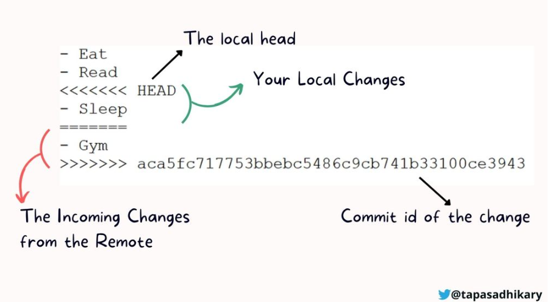

Apresentação
Não há nada mais frustrante no mundo do versionamento que um push ou
um pull rejeitado. Mas ao incorporarmos as ferramentas de versionamento
em nossa rotina de trabalho será inevitável em algum momento não
esbarrar em alguma mensagem de rejeição de um push ou pull que, a
maioria das vezes, tem como principal razão a existência de conflitos em
versões de documentos. Portanto, nesta seção vamos entender o que são
conflitos de versionamento, quais suas principais causas e como podemos
resolvê-los.
O que são os conflitos?
Conflitos são, de maneira muito sucinta, duas (ou mais) versões de um
mesmo arquivo. Conflitos são comuns mesmo quando não estamos utilizando
ferramentas de versionamento. Por exemplo, quando tentamos “colar” um
documento em uma pasta com um arquivo que já apresenta o mesmo nome.
Neste momento temos que tomar decisões: Manter o arquivo antigo?
Substituir o arquivo antigo pelo novo arquivo? Manter ambos os arquivos?
Essas são as mesmas decisões que devemos tomar quando lidamos com
conflitos de versões utilizando o git. Com a diferença que temos muito
mais controle de decisão do manejo dos conflitos nos arquivos sob
versionamento.
Quais as principais causas?
Os conflitos surgem por uma série de razões. Baseado no nosso uso
pessoal do versionamento, as duas razões mais comuns que geram versões
conflitantes são:
1 - Devido ao uso de arquivos em repositórios compartilhados, onde
duas ou mais pessoas criam versões diferentes de um mesmo arquivo em
comum.
2 - Devido ao uso de arquivos em diferentes máquinas. Mesmo que o
repositório seja de um único proprietário, caso esteja sendo utilizado
em mais de um computador, versões diferentes de um mesmo arquivo podem
ser criados.
Novamente, essas são as duas fontes mais comuns de conflitos que nós
nos deparamos na nossa prática diária, mas é importante lembrar que
outras fontes de conflito existem. O importante é saber identificar a
fonte de conflito e encotrar a melhor solução para sua resolução.
Veremos isso na próxima seção.
Como identificar conflitos
O conflito irá aparecer em seu console da seguinte maneira:
Quando gerados, os conflitos aparecem em nossos códigos da seguinte
maneira

O arquivo com conflito vai ser indicado no seu console, ao abrir este
arquivo o local de conflito vai aparecer como indicado na figura
acima.
O que é importante entender: A região entre os caracteres
<<<<<< HEAD ======= indica a situação do seu arquivo
local. A região do código entre os caracteres =====
>>>>>>>>> [caracteres e números como indicado
na figura] indica a situação do arquivo no remoto.
A partir disso uma decisão deve ser tomada:
1 - manter um dos dois estados do repositório
2 - realizar um híbrido
3 - excluir ambas
Após tomada essa decisão os caracteres especiais devem ser removidos
do texto
Referências para resolução de conflitos
Aqui trago algumas das referências mais úteis para a resolução de
conflitos. Primeiro, um velho conhecido, o livro da Jenny Brian. O capítulo
22 é um apanhado muito interessante que apresenta
diferentes formas de resolução de conflitos, incluindo os prós e contras
de cada uma delas.
A segunda referência é o site “Oh
shit, Git!?!?”. Este site não se trata de um conjunto didático, mas
sim um compilado de soluções práticas a problemas recorentes no mundo do
versionamento, incluindo problemas de conflitos.
A terceira referência é este material produzido por Tapas
Adhikary, que apresenta de maneira detalhada a origem dos conflitos
e como resolvê-los
LS0tDQp0aXRsZTogJ1Jlc29sdcOnw6NvIGRlIGNvbmZsaXRvcyBkZSB2ZXJzw6NvJw0KYXV0aG9yOiAiR2FicmllbCBOYWthbXVyYSINCmRhdGU6ICJgciBTeXMuRGF0ZSgpYCINCm91dHB1dDogaHRtbF9kb2N1bWVudA0KLS0tDQoNCmBgYHtyIHNldHVwLCBpbmNsdWRlPUZBTFNFfQ0Ka25pdHI6Om9wdHNfY2h1bmskc2V0KGVjaG8gPSBUUlVFLCBmaWcuYWxpZ24gPSAiY2VudGVyIikNCmBgYA0KDQpgYGB7ciBrbGlwcHksIGVjaG89RkFMU0UsIGluY2x1ZGU9VFJVRX0NCmtsaXBweTo6a2xpcHB5KCkNCmBgYA0KDQojIEFwcmVzZW50YcOnw6NvDQoNCk7Do28gaMOhIG5hZGEgbWFpcyBmcnVzdHJhbnRlIG5vIG11bmRvIGRvIHZlcnNpb25hbWVudG8gcXVlIHVtIHB1c2ggb3UgdW0gcHVsbCByZWplaXRhZG8uIE1hcyBhbyBpbmNvcnBvcmFybW9zIGFzIGZlcnJhbWVudGFzIGRlIHZlcnNpb25hbWVudG8gZW0gbm9zc2Egcm90aW5hIGRlIHRyYWJhbGhvIHNlcsOhIGluZXZpdMOhdmVsIGVtIGFsZ3VtIG1vbWVudG8gbsOjbyBlc2JhcnJhciBlbSBhbGd1bWEgbWVuc2FnZW0gZGUgcmVqZWnDp8OjbyBkZSB1bSBwdXNoIG91IHB1bGwgcXVlLCBhIG1haW9yaWEgZGFzIHZlemVzLCB0ZW0gY29tbyBwcmluY2lwYWwgcmF6w6NvIGEgZXhpc3TDqm5jaWEgZGUgY29uZmxpdG9zIGVtIHZlcnPDtWVzIGRlIGRvY3VtZW50b3MuIFBvcnRhbnRvLCBuZXN0YSBzZcOnw6NvIHZhbW9zIGVudGVuZGVyIG8gcXVlIHPDo28gY29uZmxpdG9zIGRlIHZlcnNpb25hbWVudG8sIHF1YWlzIHN1YXMgcHJpbmNpcGFpcyBjYXVzYXMgZSBjb21vIHBvZGVtb3MgcmVzb2x2w6otbG9zLg0KDQojIE8gcXVlIHPDo28gb3MgY29uZmxpdG9zPw0KDQpDb25mbGl0b3Mgc8OjbywgZGUgbWFuZWlyYSBtdWl0byBzdWNpbnRhLCBkdWFzIChvdSBtYWlzKSB2ZXJzw7VlcyBkZSB1bSBtZXNtbyBhcnF1aXZvLiBDb25mbGl0b3Mgc8OjbyBjb211bnMgbWVzbW8gcXVhbmRvIG7Do28gZXN0YW1vcyB1dGlsaXphbmRvIGZlcnJhbWVudGFzIGRlIHZlcnNpb25hbWVudG8uIFBvciBleGVtcGxvLCBxdWFuZG8gdGVudGFtb3MgImNvbGFyIiB1bSBkb2N1bWVudG8gZW0gdW1hIHBhc3RhIGNvbSB1bSBhcnF1aXZvIHF1ZSBqw6EgYXByZXNlbnRhIG8gbWVzbW8gbm9tZS4gTmVzdGUgbW9tZW50byB0ZW1vcyBxdWUgdG9tYXIgZGVjaXPDtWVzOiBNYW50ZXIgbyBhcnF1aXZvIGFudGlnbz8gU3Vic3RpdHVpciBvIGFycXVpdm8gYW50aWdvIHBlbG8gbm92byBhcnF1aXZvPyBNYW50ZXIgYW1ib3Mgb3MgYXJxdWl2b3M/IA0KRXNzYXMgc8OjbyBhcyBtZXNtYXMgZGVjaXPDtWVzIHF1ZSBkZXZlbW9zIHRvbWFyIHF1YW5kbyBsaWRhbW9zIGNvbSBjb25mbGl0b3MgZGUgdmVyc8O1ZXMgdXRpbGl6YW5kbyBvIGdpdC4gQ29tIGEgZGlmZXJlbsOnYSBxdWUgdGVtb3MgbXVpdG8gbWFpcyBjb250cm9sZSBkZSBkZWNpc8OjbyBkbyBtYW5lam8gZG9zIGNvbmZsaXRvcyBub3MgYXJxdWl2b3Mgc29iIHZlcnNpb25hbWVudG8uDQoNCiMjIFF1YWlzIGFzIHByaW5jaXBhaXMgY2F1c2FzPw0KDQpPcyBjb25mbGl0b3Mgc3VyZ2VtIHBvciB1bWEgc8OpcmllIGRlIHJhesO1ZXMuIEJhc2VhZG8gbm8gbm9zc28gdXNvIHBlc3NvYWwgZG8gdmVyc2lvbmFtZW50bywgYXMgZHVhcyByYXrDtWVzIG1haXMgY29tdW5zIHF1ZSBnZXJhbSB2ZXJzw7VlcyBjb25mbGl0YW50ZXMgc8OjbzogDQoNCjEgLSBEZXZpZG8gYW8gdXNvIGRlIGFycXVpdm9zIGVtIHJlcG9zaXTDs3Jpb3MgY29tcGFydGlsaGFkb3MsIG9uZGUgZHVhcyBvdSBtYWlzIHBlc3NvYXMgY3JpYW0gdmVyc8O1ZXMgZGlmZXJlbnRlcyBkZSB1bSBtZXNtbyBhcnF1aXZvIGVtIGNvbXVtLiANCg0KMiAtIERldmlkbyBhbyB1c28gZGUgYXJxdWl2b3MgZW0gZGlmZXJlbnRlcyBtw6FxdWluYXMuIE1lc21vIHF1ZSBvIHJlcG9zaXTDs3JpbyBzZWphIGRlIHVtIMO6bmljbyBwcm9wcmlldMOhcmlvLCBjYXNvIGVzdGVqYSBzZW5kbyB1dGlsaXphZG8gZW0gbWFpcyBkZSB1bSBjb21wdXRhZG9yLCB2ZXJzw7VlcyBkaWZlcmVudGVzIGRlIHVtIG1lc21vIGFycXVpdm8gcG9kZW0gc2VyIGNyaWFkb3MuDQoNCk5vdmFtZW50ZSwgZXNzYXMgc8OjbyBhcyBkdWFzIGZvbnRlcyBtYWlzIGNvbXVucyBkZSBjb25mbGl0b3MgcXVlIG7Ds3Mgbm9zIGRlcGFyYW1vcyBuYSBub3NzYSBwcsOhdGljYSBkacOhcmlhLCBtYXMgw6kgaW1wb3J0YW50ZSBsZW1icmFyIHF1ZSBvdXRyYXMgZm9udGVzIGRlIGNvbmZsaXRvIGV4aXN0ZW0uIE8gaW1wb3J0YW50ZSDDqSBzYWJlciBpZGVudGlmaWNhciBhIGZvbnRlIGRlIGNvbmZsaXRvIGUgZW5jb3RyYXIgYSBtZWxob3Igc29sdcOnw6NvIHBhcmEgc3VhIHJlc29sdcOnw6NvLiBWZXJlbW9zIGlzc28gbmEgcHLDs3hpbWEgc2XDp8Ojby4NCg0KDQojIENvbW8gaWRlbnRpZmljYXIgY29uZmxpdG9zDQoNCk8gY29uZmxpdG8gaXLDoSBhcGFyZWNlciBlbSBzZXUgY29uc29sZSBkYSBzZWd1aW50ZSBtYW5laXJhOg0KDQpRdWFuZG8gZ2VyYWRvcywgb3MgY29uZmxpdG9zIGFwYXJlY2VtIGVtIG5vc3NvcyBjw7NkaWdvcyBkYSBzZWd1aW50ZSBtYW5laXJhDQoNCmBgYHtyIGVjaG89RkFMU0UsIGV2YWw9VFJVRSxvdXQud2lkdGg9IjgwJSJ9DQprbml0cjo6aW5jbHVkZV9ncmFwaGljcyhoZXJlOjpoZXJlKCJmaWdzIiwgImNvbmZsaWN0cy1hbGwucG5nIikpDQpgYGANCg0KTyBhcnF1aXZvIGNvbSBjb25mbGl0byB2YWkgc2VyIGluZGljYWRvIG5vIHNldSBjb25zb2xlLCBhbyBhYnJpciBlc3RlIGFycXVpdm8gbyBsb2NhbCBkZSBjb25mbGl0byB2YWkgYXBhcmVjZXIgY29tbyBpbmRpY2FkbyBuYSBmaWd1cmEgYWNpbWEuIA0KDQpPIHF1ZSDDqSBpbXBvcnRhbnRlIGVudGVuZGVyOiBBIHJlZ2nDo28gZW50cmUgb3MgY2FyYWN0ZXJlcyA8PDw8PDwgSEVBRCA9PT09PT09IGluZGljYSBhIHNpdHVhw6fDo28gZG8gc2V1IGFycXVpdm8gbG9jYWwuIEEgcmVnacOjbyBkbyBjw7NkaWdvIGVudHJlIG9zIGNhcmFjdGVyZXMgPT09PT0gPj4+Pj4+Pj4+IFtjYXJhY3RlcmVzIGUgbsO6bWVyb3MgY29tbyBpbmRpY2FkbyBuYSBmaWd1cmFdIGluZGljYSBhIHNpdHVhw6fDo28gZG8gYXJxdWl2byBubyByZW1vdG8uDQoNCkEgcGFydGlyIGRpc3NvIHVtYSBkZWNpc8OjbyBkZXZlIHNlciB0b21hZGE6DQoNCjEgLSBtYW50ZXIgdW0gZG9zIGRvaXMgZXN0YWRvcyBkbyByZXBvc2l0w7NyaW8NCg0KMiAtIHJlYWxpemFyIHVtIGjDrWJyaWRvIA0KDQozIC0gZXhjbHVpciBhbWJhcw0KDQpBcMOzcyB0b21hZGEgZXNzYSBkZWNpc8OjbyBvcyBjYXJhY3RlcmVzIGVzcGVjaWFpcyBkZXZlbSBzZXIgcmVtb3ZpZG9zIGRvIHRleHRvDQoNCiMgUmVmZXLDqm5jaWFzIHBhcmEgcmVzb2x1w6fDo28gZGUgY29uZmxpdG9zDQoNCkFxdWkgdHJhZ28gYWxndW1hcyBkYXMgcmVmZXLDqm5jaWFzIG1haXMgw7p0ZWlzIHBhcmEgYSByZXNvbHXDp8OjbyBkZSBjb25mbGl0b3MuIA0KUHJpbWVpcm8sIHVtIHZlbGhvIGNvbmhlY2lkbywgbyBsaXZybyBkYSBKZW5ueSBCcmlhbi4gTyBbKipjYXDDrXR1bG8gMjIqKl0oaHR0cHM6Ly9oYXBweWdpdHdpdGhyLmNvbS9naXQtYnJhbmNoZXMuaHRtbD9xPWNvbmZsaSNkZWFsaW5nLXdpdGgtY29uZmxpY3RzKSDDqSB1bSBhcGFuaGFkbyBtdWl0byBpbnRlcmVzc2FudGUgcXVlIGFwcmVzZW50YSBkaWZlcmVudGVzIGZvcm1hcyBkZSByZXNvbHXDp8OjbyBkZSBjb25mbGl0b3MsIGluY2x1aW5kbyBvcyBwcsOzcyBlIGNvbnRyYXMgZGUgY2FkYSB1bWEgZGVsYXMuDQoNCkEgc2VndW5kYSByZWZlcsOqbmNpYSDDqSBvIHNpdGUgWyJPaCBzaGl0LCBHaXQhPyE/Il0oaHR0cHM6Ly9vaHNoaXRnaXQuY29tLykuIEVzdGUgc2l0ZSBuw6NvIHNlIHRyYXRhIGRlIHVtIGNvbmp1bnRvIGRpZMOhdGljbywgbWFzIHNpbSB1bSBjb21waWxhZG8gZGUgc29sdcOnw7VlcyBwcsOhdGljYXMgYSBwcm9ibGVtYXMgcmVjb3JlbnRlcyBubyBtdW5kbyBkbyB2ZXJzaW9uYW1lbnRvLCBpbmNsdWluZG8gcHJvYmxlbWFzIGRlIGNvbmZsaXRvcy4NCg0KQSB0ZXJjZWlyYSByZWZlcsOqbmNpYSDDqSBlc3RlIG1hdGVyaWFsIHByb2R1emlkbyBwb3IgW1RhcGFzIEFkaGlrYXJ5XShodHRwczovL3d3dy5mcmVlY29kZWNhbXAub3JnL25ld3MvcmVzb2x2ZS1tZXJnZS1jb25mbGljdHMtaW4tZ2l0LWEtcHJhY3RpY2FsLWd1aWRlLyksIHF1ZSBhcHJlc2VudGEgZGUgbWFuZWlyYSBkZXRhbGhhZGEgYSBvcmlnZW0gZG9zIGNvbmZsaXRvcyBlIGNvbW8gcmVzb2x2w6otbG9zDQo=